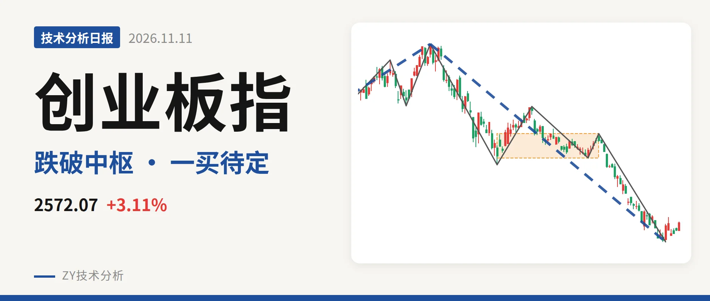
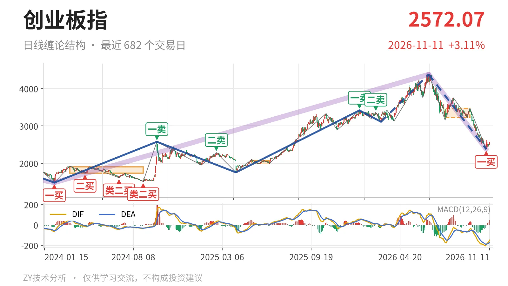
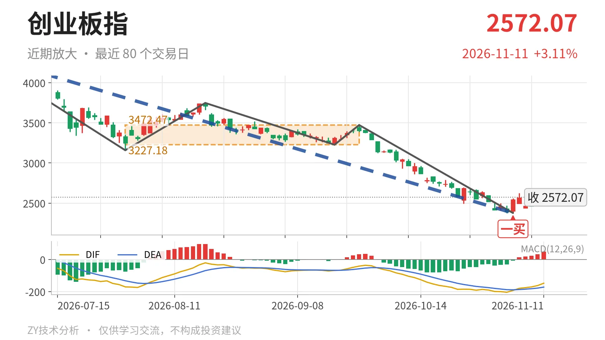

创业板指｜反弹未成笔 3227点成三卖观察位

最近日线中枢 3227.18—3472.47点，收盘位于中枢之下
一句话：反抽未回3227点前，下跌线段仍算延续。
📉 走势结构：下跌段仍在延续，反抽未成笔
6月25日以来的下跌段还在延续，当前只能先按下跌中的反抽处理。更大级别上，2024年2月5日至2026年6月25日的上涨走势尚未走完，但6月25日以来的下跌段同样没有结束，属于大级别上涨后的深幅回落。日线线段里，6月25日至11月4日的下跌线段从4380.41点走到2376.28点，内含5笔，没有结束迹象。9月22日至11月4日这段日线下跌笔已经结束，11月5日以来最高2625.99点、最低2438.72点的波动尚未构成新的日线笔。

🧭 中枢位置：收盘低于最近日线中枢下沿
最新收盘2572.07点低于最近日线笔中枢下沿约20.3%。该中枢出现在7月30日至9月22日，区间 3227.18—3472.47点，尚未完成，价格向下离开中枢。下方更早的日线笔中枢2025年5月14日至2025年6月23日区间1996.96—2076.91点、线段级别中枢2022年4月27日至2023年8月4日区间2122.32—2282.65点仍在收盘价下方。最近笔中枢较2025年5月明显上移，但当前价格没有回到该中枢内，中枢对反抽形成结构压制。
🎯 买卖点：11月4日形成日线笔一买
日线笔级别买卖点中，11月4日 2376.28点 是一个一买，所在笔为9月22日至11月4日下跌笔。该下跌笔已经结束，后续反抽尚未成笔，因此这个一买目前只能对应日线笔级别，还没有终结6月25日以来的日线下跌线段。上方1月13日3416.84点一卖和2月25日3363.18点二卖仍是反抽要面对的结构位，当下离这两处仍有明显距离。

⚖️ 背驰：绿柱收缩但DIF仍新低
9月22日至11月4日下跌笔与6月25日至7月30日下跌笔相比：价格创出2376.28点新低，绿柱面积由1837缩至1107，但DIF低点从-171.1下移到-204.5。这种“价格新低、绿柱面积收缩、DIF仍创新低”的状态，不是标准的新低不新弱，只构成力度部分衰减。因此11月4日一买更多是下跌速率放缓后的结构点，反弹能否成笔、能否拉回中枢，还要看后续反抽。
🔭 关键位置观察：3227点决定三卖还是中枢扩展
反抽若回不到 3227点 上方，结构上构成三卖，6月25日以来的下跌线段会继续延伸。重新站上3227点，则更可能是对7月30日至9月22日中枢的向下离开后拉回，下跌更可能转为中枢扩展。下方2376点若被跌破，11月4日一买就只对应更小级别。当前反弹尚未成笔，价格在2572.07点，距3227点仍有约655点，结构上仍偏弱，弱在反弹未成笔且远离中枢下沿。
⚠️ 本文为基于公开行情数据的缠论技术结构记录，由程序自动计算并生成，仅供学习交流，不构成任何投资建议。市场有风险，投资需谨慎。